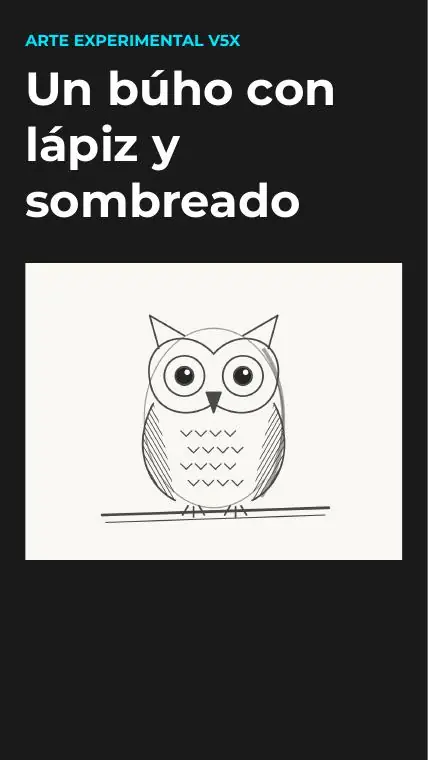
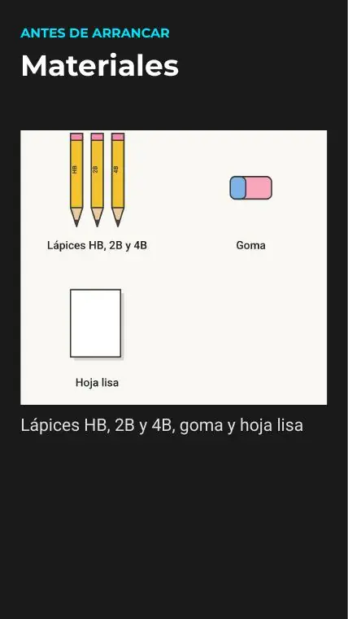
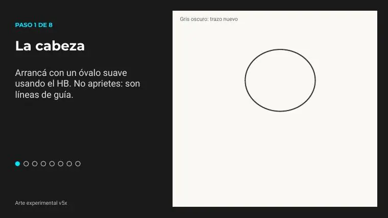
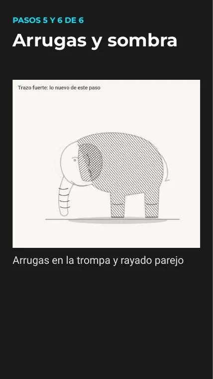
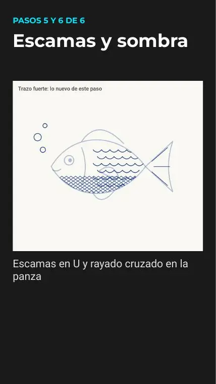
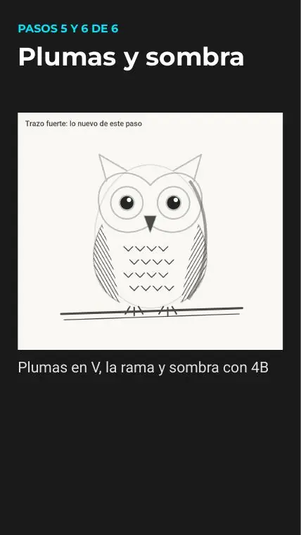
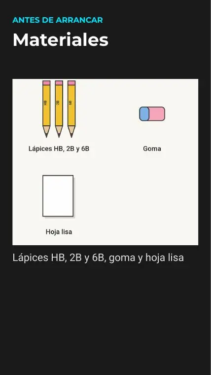
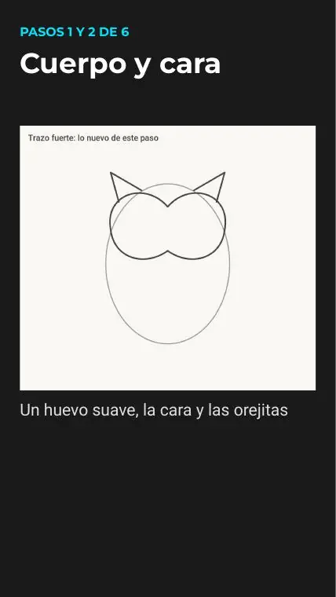
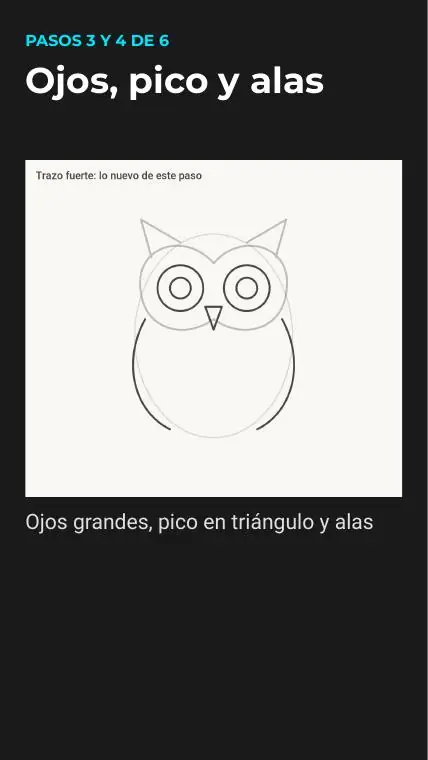

Blog › Sombreado con lápiz: durezas HB, 2B, 4B y 6B, presión, tramado y degradado
Post semanal #5 · sombreado
Sombreado con lápiz: durezas HB, 2B, 4B y 6B, presión, tramado y degradado
Guía de sombreado con lápiz para principiantes: cómo sostenerlo, qué lápiz usar (HB, 2B, 4B, 6B), presión, rayado y tramado, degradado de valores, luz y sombra proyectada, difuminar y errores típicos.
15 diapositivas · 11/11/2026

Antes de arrancar
Qué vas a aprender
- Cómo sostener el lápiz para bocetar y para sombrear.
- Qué significan HB, 2B, 4B y 6B y cuándo usar cada uno.
- Cómo controlar la presión y armar un degradado de valores.
- Rayado, tramado (rayado cruzado) y difuminado.
- Dónde va la luz, la sombra propia y la sombra proyectada.
- Los errores más comunes y cómo evitarlos.
Practicás con los tutoriales de lápiz del canal: gato, búho y elefante.
@Arteexperimentalv5x
Materiales
Qué lápices necesitás
No hace falta un set caro. Con dos o tres durezas alcanza: un HB para el boceto y uno o dos blandos (2B, 4B o 6B) para las sombras. Sumá goma, sacapuntas y una hoja lisa.
Si solo tenés un HB, también se puede: apretá un poco más en las zonas oscuras, como dice el tutorial del gato.


@Arteexperimentalv5x
Durezas
HB, 2B, 4B, 6B: qué quiere decir cada una
La H indica lápiz duro (línea más clara y fina) y la B, lápiz blando (línea más negra). Cuanto más alto el número de B, más blanda es la mina: marca más oscuro, se gasta más rápido y se corre más con la mano.
| Lápiz | Para qué lo usamos en el canal |
|---|---|
| HB | Boceto y líneas de guía, sin apretar. Se borran fácil. |
| 2B | Repasar el contorno y sombras medias (gato, búho, elefante). |
| 4B | Sombras oscuras, como el costado del búho. |
| 6B | Los negros más profundos y la sombra pegada al piso (elefante). |
La intensidad cambia según la marca: probá tus lápices en un costado de la hoja antes de empezar.
@Arteexperimentalv5x
Paso 1 de 6
Cómo sostener el lápiz
- Para detalles y contornos: agarralo como para escribir, cerca de la punta. Tenés control fino.
- Para sombrear zonas grandes: tomalo más atrás y bastante acostado, casi paralelo a la hoja, para trabajar con el costado de la mina. Sale un gris parejo y sin líneas marcadas.
- Mové la muñeca y el codo, no solo los dedos: los trazos largos salen más sueltos.
- Apoyá una hoja de papel debajo de la mano para no arrastrar el grafito.
@Arteexperimentalv5x
Paso 2 de 6
Presión: de gris clarito a negro
El mismo lápiz da muchos grises según cuánto apretás. Empezá siempre suave y oscurecé de a capas: es fácil sumar grafito y difícil sacarlo. En el gato, el boceto se hace con HB sin apretar y recién al final se repasa con 2B.


@Arteexperimentalv5x
Paso 3 de 6
Rayado y tramado
Rayado: líneas paralelas en una sola dirección; cuanto más juntas, más oscuro. Es el que se ve en el cuerpo del elefante.
Tramado (rayado cruzado): una segunda capa de líneas en otra dirección encima de la primera para oscurecer más, como en la oreja del elefante.
Seguí la forma del objeto: en un cuerpo redondo, las rayitas acompañan la curva.


@Arteexperimentalv5x
Paso 3 · otro material
El tramado también sirve con birome
La idea es la misma con cualquier herramienta de línea. En el Short del pez, la panza se oscurece con rayado cruzado de birome: como la tinta no se borra, la presión casi no cambia y el valor se arma con la cantidad de líneas.


@Arteexperimentalv5x
Paso 4 de 6
Escala de valores (degradado)
Antes de sombrear un dibujo, hacé este ejercicio: dibujá una tira de 5 cuadraditos y llenala de claro a oscuro.
- Blanco del papel (no lo toques).
- HB muy suave.
- 2B con presión media.
- 4B con presión media o tramado.
- 6B (o 4B) apretando, el más oscuro.
Después probá un degradado continuo: una sola franja que pase de oscuro a claro sin saltos, aflojando la presión de a poco.
@Arteexperimentalv5x
Paso 5 de 6
Luz, sombra propia y sombra proyectada
- Elegí de qué lado viene la luz y mantenela igual en todo el dibujo.
- Sombra propia: el lado del objeto que no recibe luz. En el búho, el costado de las alas se oscurece con 4B.
- Sombra proyectada: la que el objeto tira sobre el piso o la rama, del lado contrario a la luz. Suele ser más oscura cerca del objeto y se aclara al alejarse.
- Dejá sin pintar los brillos: el blanco del papel es tu luz más fuerte.


@Arteexperimentalv5x
Paso 6 de 6
Difuminar (y cuándo no)
- Para pasar de un gris a otro sin que se noten las líneas, frotá suave con un pañuelo de papel, un hisopo o un difumino.
- Funciona mejor con lápices blandos (2B en adelante): tienen más grafito suelto.
- No difumines todo: si querés textura (pelo, plumas, arrugas), dejá las rayitas a la vista.
- Para recuperar luces, usá la goma como si fuera un lápiz blanco: con un borde limpio o con goma moldeable.
@Arteexperimentalv5x
Ojo con esto
Errores típicos al sombrear
- Apretar desde el principio: marca surcos en la hoja que después no se tapan ni se borran.
- Contorno muy oscuro y sombra débil: el dibujo queda plano. Equilibrá los valores.
- Rayas en todas direcciones: se ve desprolijo. Elegí una dirección o seguí la forma.
- Luz de dos lados a la vez: decidí un solo lado de luz.
- Mano sobre el grafito: mancha todo. Sombreá de arriba hacia abajo (o de izquierda a derecha si sos diestro) y usá una hoja de apoyo.
- Punta sin sacar: para detalles, punta afilada; para zonas grandes, mina más gastada o acostada.
@Arteexperimentalv5x
A practicar
Tres tutoriales de lápiz del canal
- Gato fácil con lápiz: HB para el boceto, 2B para repasar y sombrear un costado con rayitas.
- Búho con lápiz y sombreado: HB, 2B y 4B, plumas en V y sombra en las alas.
- Elefante con lápiz: HB, 2B y 6B, arrugas y rayado parejo.
Cada tutorial tiene las diapositivas en PDF para descargar.


@Arteexperimentalv5x
Video
Búho con lápiz: sombreado con HB, 2B y 4B
También: elefante con lápiz · gato fácil con lápiz
@Arteexperimentalv5x
Galería
Diapositivas del tutorial del búho




@Arteexperimentalv5x
¿Te gustó?
Seguí en el canal
Mostrá tu escala de valores o tu dibujo sombreado en los comentarios de los Shorts.
@Arteexperimentalv5x · Todos los tutoriales · Más posts del blog
@Arteexperimentalv5x
Publicado: 11/11/2026 · sombreado, lápiz, técnica, principiantes